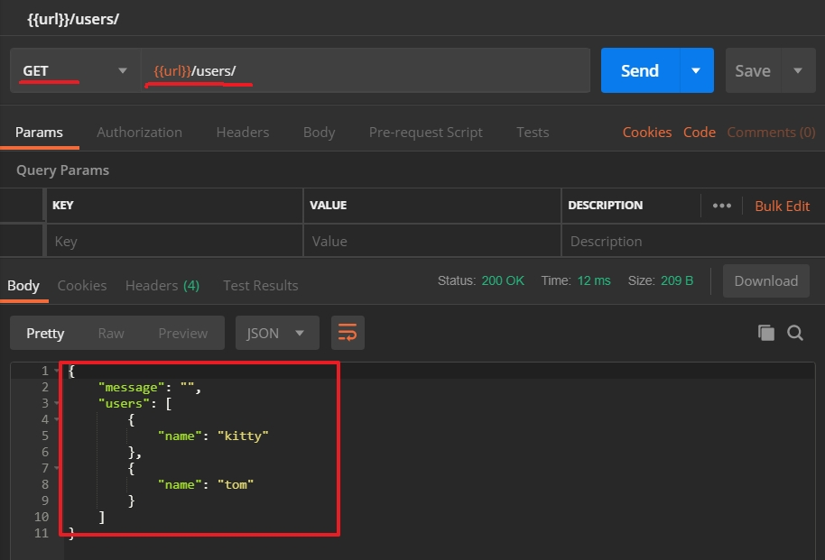
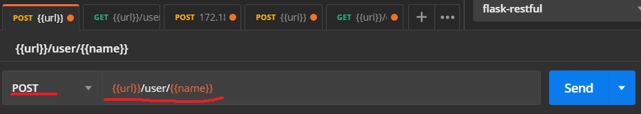
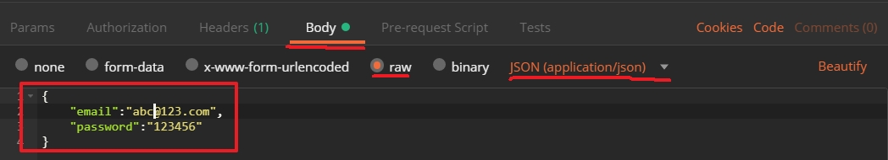
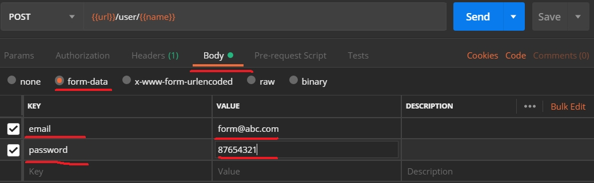
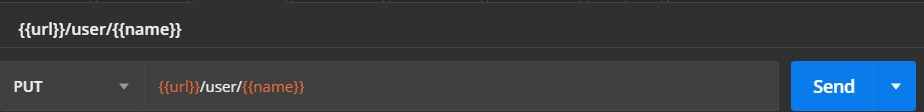

處理參數
之前處理的參數是透個url來傳遞參數，如果是使用post和put可就沒辦法使用，而是需要透過參數傳遞
新增Users
我們要確認users的內容到底有多少，可以新增一個Users的Resource來提交取得所有user的==GET==方法
1
2
3
4
5
6
| class Users(Resource):
def get(self):
return {
'message':'',
'users':users
}
|
修改一下app.py註冊Users
1
| api.add_resource(Users, '/users/')
|
執行結果如下

開發POST
我們先import一個函式庫進來，因為我們需要解析請求的參數
1
| from flask_restful import reqparse
|
在import reqparse這函式庫之後首先要定義欲接受請求的參數內容，在要使用的地方
1
2
3
4
5
| class User(Resource):
parser = reqparse.RequestParser()
parser.add_argument('email',required=True,help='Email is required')
parser.add_argument('password',required=True,help='Password is required')
|
type:是要指定的型別
required:請求參數中屬於必填，入無輸入會直接回傳錯誤
help:是當請求參睥驗證失敗(型別不符，未填寫)會返回的訊息
1
| parser.add_argument('foo', type=int, required=True,help='error message')
|
實作POST
使用reqparse之後，實作就變的很簡單
1
2
3
4
5
6
7
8
9
10
11
12
13
14
|
def post(self, name):
arg = self.parser.parse_args()
user = {
'name': name,
'email': arg['email'],
'password': arg['password']
}
global users
users.append(user)
return {
'message':'Inser user success',
'user':user
}
|
設定postman
可以設定postman來驗證POST是否正確
首先先選擇POST的方法如下圖

接下來設定傳送的內容有兩種JSON和FORM
JSON


這兩個作法都能接受，如果要指定格式參考以下例子
1
2
3
4
5
6
7
8
9
10
11
|
parser.add_argument('name', type=int, location='form')
parser.add_argument('name', type=int, location='args')
parser.add_argument('name', type=int, location='json')
parser.add_argument('name', type=int, location=['form', 'json'])
|
開發PUT
put是更新資料
1
2
3
4
5
6
7
8
9
10
11
12
13
14
15
|
def put(self, name):
arg =self.parser.parse_args()
find = [item for item in users if item['name']==name]
if len(find) == 0:
return{
'message':'username not exist'
},403
user = find[0]
user['email']= arg['email']
user['password'] = arg['password']
return {
'message':'Update user success',
'user':user
}
|
驗證PUT
首先先選擇PUT方法

在json中輸入資料和form中輸入資料，可以看到有改變，可以使用get/users來查看